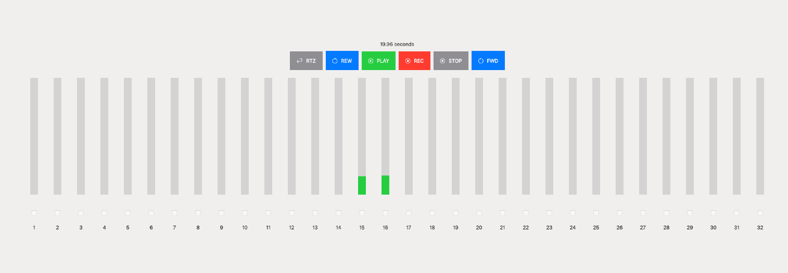
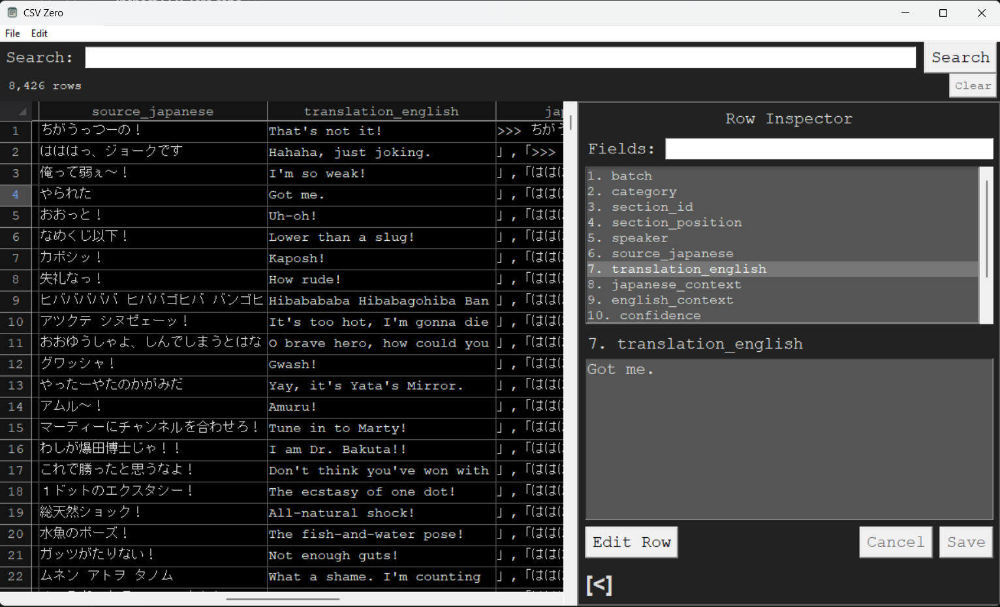

Software
Small tools, desktop apps, and systems I built because I wanted them to exist or needed them for real work.
Far Reach Co.
A real-time collaborative tabletop platform I developed and helped shape from the ground up.
I am the developer behind the Far Reach Co. platform: a browser-based virtual tabletop with live collaboration, role-based permissions, asset handling, payments, and tooling for game groups. It is a full-stack product with a lot of moving pieces, built for actual users rather than as a demo.
Tape Sim
A recorder for people who like tape-machine workflows more than busy DAW screens.

Tape Sim is a multitrack audio recorder with rewind, fast-forward, RTZ, stereo bounce, and keyboard shortcuts. It records 48kHz 24-bit WAV files and supports as many simultaneous tracks as your audio interface can handle.
CSV Zero
A tiny CSV editor for when opening a spreadsheet app feels like too much ceremony.

CSV Zero auto-detects delimiters and encoding, searches across all data, and keeps insert/edit/remove operations direct. The interface is intentionally plain: dark theme, monospaced text, and no spreadsheet bloat.
Mayura English Patch
A careful English patch for a classic Japanese desktop ghost.

An English localization of the classic Japanese desktop ghost Mayura. The patch preserves the original installation, creates a separate English copy, and includes a guided Windows installer.
Parch
A self-hosted encrypted chat system built around privacy, ownership, and boringly explicit infrastructure.
Parch is a user-hosted messenger with end-to-end encryption, public-key identity, and a Linux CLI host client with local SQLite storage. Earlier versions also explored WebRTC video/voice infrastructure, but the current project is focused on the encrypted messaging and self-hosting model.